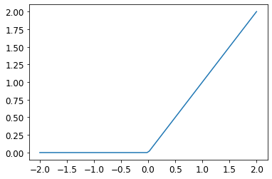

The final step of this series looking at chapter 4 of the fastai book tackles the final step where we construct a very simple 3-layer neural network which learns to distinguish a pullover from a dress.
In the previous post we used stochastic gradient descent to train a model to fit a linear function to our Fashion MNIST data, specifically the difference between a pullover and a dress.
In this final stage, we will take the next step to creating a neural network in code that will be used to detect that same difference between a pullover and a dress. The key difference here is that we will need to ‘add non-linearity’ to our function. I have no mathematics background so I have very little intuitive (or learned!) understanding of specifically what that means, but my current mental model as learned during the course is that linear functions just aren’t flexible enough to learn more complex patterns. In the end, what we want is a function that will fit to the patterns in our training data (as mapped to a multidimensional space). Simple linear functions aren’t going to cut it.
What this looks like in code is this:
weights1 = initialise_params((28*28, 30))bias1 = initialise_params(30)weights2 = initialise_params((30, 1))bias2 = initialise_params(1)def simple_network(x_batch): result = x_batch@weights1 + bias1 result = result.max(tensor(0.0)) result = result@weights2 + bias2return result
You can see the three layers of our simple network pretty clearly in the code above. The middle layer is what otherwise is known as a ReLU or rectified linear unit. It basically means that negative values passing through that function become zero and all positive values are unchanged. When you plot the function it looks like this:
plot_function(F.relu)

When we put a non-linear function in between two linear functions, then this network is able to encode and express more complicated patterns. This is basically all we’re doing with deep learning: we stack these layers on to make the functions more and more capable of modelling and representing complex things.
We can express the above simple network in PyTorch-specific code (functionally it’s the same):
We don’t actually emerge at the end of this with a vastly superior score to what we had at the end of the last notebook, but this basis (the simple neural network) has far more open vistas within which we can work and build upon.
Finally, to round out my understanding, I put together a little diagram showing the various pieces that go into the Learner class when we instantiate it, adding some of the other concepts etc below it as I felt was appropriate. This isn’t a complete picture by any means, but I find it helpful to visualise how things are layered and pieced together: